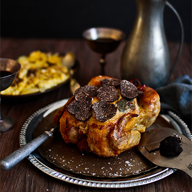

Описание
Запечённая курица с хрустящей корочкой — идеальное блюдо для семейного ужина. Но мы знаем один секрет, как превратить его в нечто совершенно особенное — всего несколько тонких ломтиков чёрного трюфеля.
Ингредиенты
- 1 небольшая куриная тушка (примерно 1,2 кг)
- 50 гр сливочного масла
- 20 гр чёрного трюфеля
- 2 веточки розмарина
- Оливковое масло
- Соль и чёрный перец
Процесс
- Разогрейте духовку до 230 градусов. Достаньте курицу из холодильника, промокните бумажным полотенцем и дайте полежать 15 минут при комнатной температуре.
- Сделайте несколько глубоких надрезов в районе голени, бёдер и грудки. Пальцами сделайте «карманы» для начинки.
- Натрите трюфель на очень тонкие ломтики и равномерно распределите их под куриной кожей.
- Разомните сливочное масло в руках и аккуратно распределите его поверх ломтиков трюфеля.
- Смажьте противень оливковым маслом, положите веточки розмарина на дно.
- Смажьте курицу оливковым маслом, хорошо посолите, поперчите и уложите на веточки розмарина.
- Запекайте в середине духовки 45 минут. Старайтесь не открывать дверцу во время готовки.